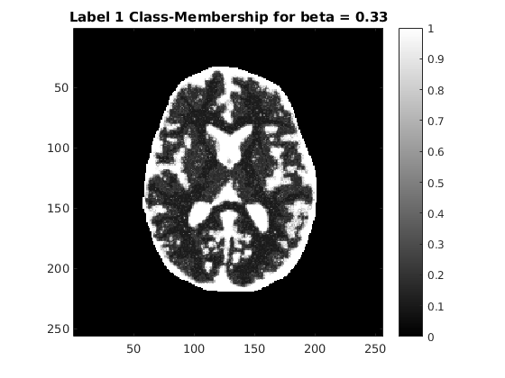

Contents
Init
close all; clc; clear; load('../data/assignmentSegmentBrainGmmEmMrf.mat'); K = 3; X = getStartingLabel(imageData, imageMask); mu = zeros(1, K); sigma = zeros(1, K); beta = 0.33; % init means and stddev for label = 1:K, positions = X == label; mu(1, label) = mean(imageData(positions)); sigma(1, label) = std(imageData(positions)); end;
Observations and justifications
Choice of beta: After a bit of tweaking, beta = 0.33 gives a smooth enough segmented image.
Initial value of labels: The labels are given by dividing the image into 3 equal parts based on their intensities. The botton-third intensities are given label = 1, the middle-third are given label=2, and the last one-third are given label = 3.
Initial means and stddev: Given an initial estimate of the class labels, the means and stddev are simply given by the mean and stddev of the pixels of the class label respectively.
GMM EM MRF With beta = 0.33
Gaussian Mixture Model, with Expectation Maximisation with potential beta equal to 0.33
[img, segmap, mu_hat] = getEMLabels(imageData, imageMask, K, X, mu, sigma, beta, 1); showImage(imageData, 'Original Corrupted Image'); showImage(segmap(:, :, 1), 'Label 1 Class-Membership for beta = 0.33'); showImage(segmap(:, :, 2), 'Label 2 Class-Membership for beta = 0.33'); showImage(segmap(:, :, 3), 'Label 3 Class-Membership for beta = 0.33'); showImage(img, 'GMM-MRF-EM Optimised Image Segmentation for beta = 0.33');
P(x | y, beta, theta) : (Before) 1.413089e+05 => (After) 1.038688e+05 P(x | y, beta, theta) : (Before) 1.504152e+05 => (After) 8.601767e+04 P(x | y, beta, theta) : (Before) 1.557766e+05 => (After) 7.790844e+04 P(x | y, beta, theta) : (Before) 1.586878e+05 => (After) 7.464185e+04 P(x | y, beta, theta) : (Before) 1.590504e+05 => (After) 7.476759e+04 P(x | y, beta, theta) : (Before) 1.580532e+05 => (After) 7.629215e+04 P(x | y, beta, theta) : (Before) 1.566932e+05 => (After) 7.792668e+04 P(x | y, beta, theta) : (Before) 1.550781e+05 => (After) 7.983614e+04 P(x | y, beta, theta) : (Before) 1.531794e+05 => (After) 8.247566e+04 P(x | y, beta, theta) : (Before) 1.512899e+05 => (After) 8.554409e+04 P(x | y, beta, theta) : (Before) 1.498042e+05 => (After) 8.813649e+04 P(x | y, beta, theta) : (Before) 1.487358e+05 => (After) 9.019660e+04 P(x | y, beta, theta) : (Before) 1.479822e+05 => (After) 9.161901e+04 P(x | y, beta, theta) : (Before) 1.476119e+05 => (After) 9.237260e+04 P(x | y, beta, theta) : (Before) 1.473710e+05 => (After) 9.283130e+04 P(x | y, beta, theta) : (Before) 1.471396e+05 => (After) 9.325458e+04 P(x | y, beta, theta) : (Before) 1.470366e+05 => (After) 9.345990e+04 P(x | y, beta, theta) : (Before) 1.470031e+05 => (After) 9.352079e+04 P(x | y, beta, theta) : (Before) 1.469669e+05 => (After) 9.361012e+04 P(x | y, beta, theta) : (Before) 1.469701e+05 => (After) 9.362463e+04 P(x | y, beta, theta) : (Before) 1.469338e+05 => (After) 9.368556e+04 P(x | y, beta, theta) : (Before) 1.469225e+05 => (After) 9.371315e+04 P(x | y, beta, theta) : (Before) 1.469136e+05 => (After) 9.373566e+04 P(x | y, beta, theta) : (Before) 1.469290e+05 => (After) 9.370839e+04 P(x | y, beta, theta) : (Before) 1.469482e+05 => (After) 9.368884e+04 P(x | y, beta, theta) : (Before) 1.469794e+05 => (After) 9.364370e+04 P(x | y, beta, theta) : (Before) 1.470018e+05 => (After) 9.361675e+04 P(x | y, beta, theta) : (Before) 1.469869e+05 => (After) 9.363984e+04 P(x | y, beta, theta) : (Before) 1.470097e+05 => (After) 9.359763e+04 P(x | y, beta, theta) : (Before) 1.470049e+05 => (After) 9.359904e+04
Optimal values of class means
fprintf('Optimal values of class means for chosen beta\n'); disp(mu_hat); fprintf('\n');
Optimal values of class means for chosen beta
0.4309 0.5476 0.6383
GMM EM MRF With beta = 0
Gaussian Mixture Model, with Expectation Maximisation with no MRF
[img, segmap, mu_hat] = getEMLabels(imageData, imageMask, K, X, mu, sigma, 0, 1); showImage(segmap(:, :, 1), 'Label 1 Class-Membership for beta = 0'); showImage(segmap(:, :, 2), 'Label 2 Class-Membership for beta = 0'); showImage(segmap(:, :, 3), 'Label 3 Class-Membership for beta = 0'); showImage(img, 'GMM-MRF-EM Optimised Image Segmentation for beta = 0');
P(x | y, beta, theta) : (Before) 1.435754e+05 => (After) 1.014720e+05 P(x | y, beta, theta) : (Before) 1.579995e+05 => (After) 7.563005e+04 P(x | y, beta, theta) : (Before) 1.677809e+05 => (After) 6.274537e+04 P(x | y, beta, theta) : (Before) 1.710243e+05 => (After) 5.993031e+04 P(x | y, beta, theta) : (Before) 1.710912e+05 => (After) 6.013437e+04 P(x | y, beta, theta) : (Before) 1.712094e+05 => (After) 5.909322e+04 P(x | y, beta, theta) : (Before) 1.719222e+05 => (After) 5.686855e+04 P(x | y, beta, theta) : (Before) 1.731992e+05 => (After) 5.444063e+04 P(x | y, beta, theta) : (Before) 1.748066e+05 => (After) 5.323053e+04 P(x | y, beta, theta) : (Before) 1.754483e+05 => (After) 5.490718e+04 P(x | y, beta, theta) : (Before) 1.748218e+05 => (After) 5.801548e+04 P(x | y, beta, theta) : (Before) 1.739007e+05 => (After) 6.044417e+04 P(x | y, beta, theta) : (Before) 1.730242e+05 => (After) 6.220000e+04 P(x | y, beta, theta) : (Before) 1.721453e+05 => (After) 6.372952e+04 P(x | y, beta, theta) : (Before) 1.712360e+05 => (After) 6.522482e+04 P(x | y, beta, theta) : (Before) 1.703325e+05 => (After) 6.669486e+04 P(x | y, beta, theta) : (Before) 1.695194e+05 => (After) 6.802342e+04 P(x | y, beta, theta) : (Before) 1.688440e+05 => (After) 6.914973e+04 P(x | y, beta, theta) : (Before) 1.682950e+05 => (After) 7.008594e+04 P(x | y, beta, theta) : (Before) 1.678601e+05 => (After) 7.084555e+04 P(x | y, beta, theta) : (Before) 1.675169e+05 => (After) 7.145995e+04 P(x | y, beta, theta) : (Before) 1.672535e+05 => (After) 7.194363e+04 P(x | y, beta, theta) : (Before) 1.670554e+05 => (After) 7.231754e+04 P(x | y, beta, theta) : (Before) 1.669096e+05 => (After) 7.260149e+04 P(x | y, beta, theta) : (Before) 1.668059e+05 => (After) 7.281173e+04 P(x | y, beta, theta) : (Before) 1.667344e+05 => (After) 7.296400e+04 P(x | y, beta, theta) : (Before) 1.666877e+05 => (After) 7.307109e+04 P(x | y, beta, theta) : (Before) 1.666588e+05 => (After) 7.314464e+04 P(x | y, beta, theta) : (Before) 1.666442e+05 => (After) 7.319100e+04 P(x | y, beta, theta) : (Before) 1.666406e+05 => (After) 7.321652e+04